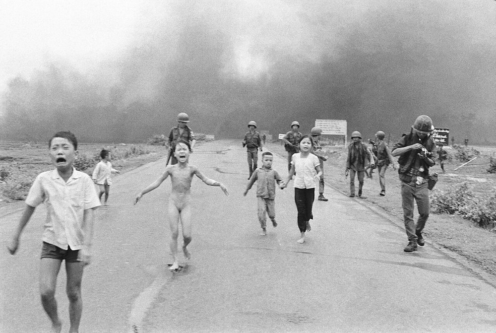

The Terror of War
Nick Ut (attribution disputed) · 8 June 1972 · Photograph
In copyright. Look and learn: shown for study, not for download.
On 8 June 1972 a South Vietnamese pilot mistook a group of civilians and soldiers leaving a temple at Trảng Bàng for the enemy and dropped napalm. The girl is Phan Thi Kim Phuc, then nine. At the Associated Press office in Saigon, staff pointed to the agency's rule against frontal nudity; the photo chief, Horst Faas, had it sent anyway. It won the 1973 Pulitzer Prize under Nick Ut's name. Since a 2025 documentary, the authorship has been disputed: World Press Photo has suspended the credit, and the AP still gives it to Ut.